S.XIV
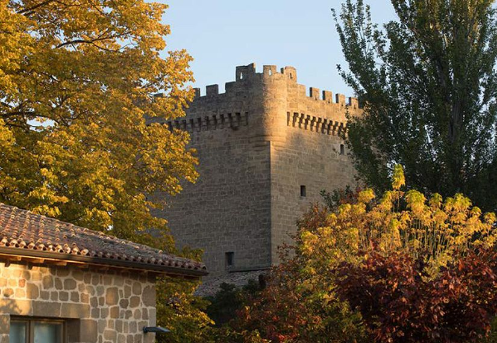
El castillo
D. Juan Martínez de Rojas manda levantar el castillo en la segunda mitad del siglo XIV.
Para entrar, confirma que eres mayor de edad.
Disfruta de un consumo responsable.
Cuzcurrita de Río Tirón · Rioja Alta
Castillo del siglo XIV, bodega por gravedad y viñas viejas de tempranillo y viura, vendimiadas a mano.
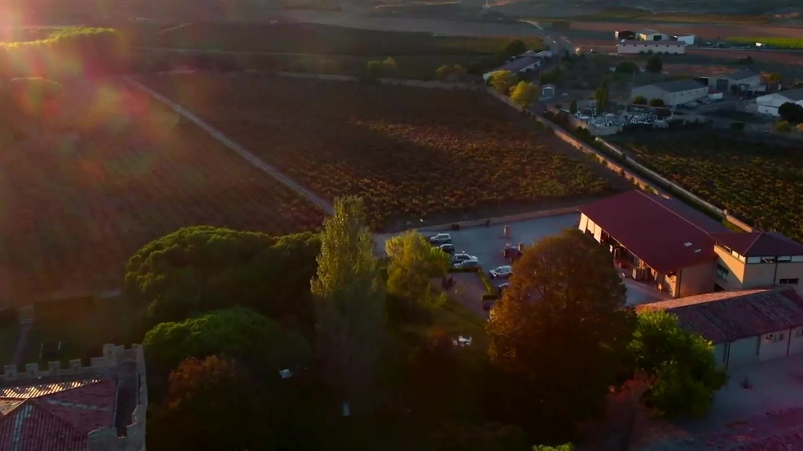
El castillo, la bodega y el viñedo comparten un mismo recinto amurallado.
Vídeo de la bodegaMás de seis siglos de piedra y una idea sencilla: hacer vino solo con la uva que crece alrededor del castillo.
S.XIV

D. Juan Martínez de Rojas manda levantar el castillo en la segunda mitad del siglo XIV.
1999
Un grupo familiar adquiere el castillo y lo restaura por completo para recuperar su tradición vitivinícola.
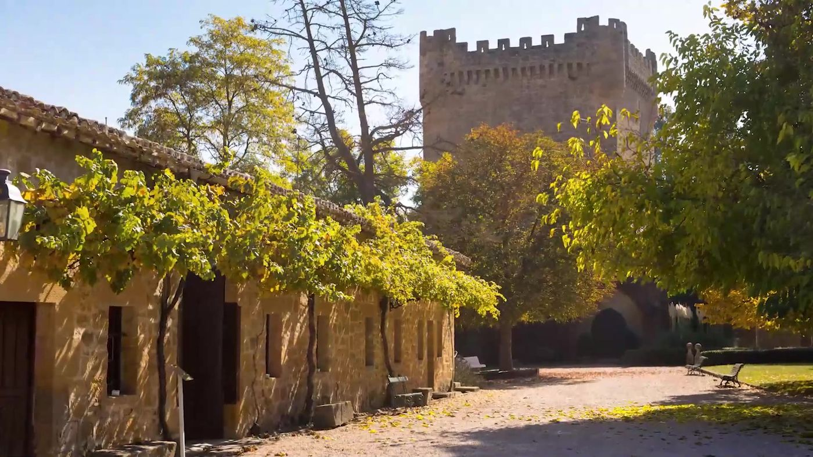
2000
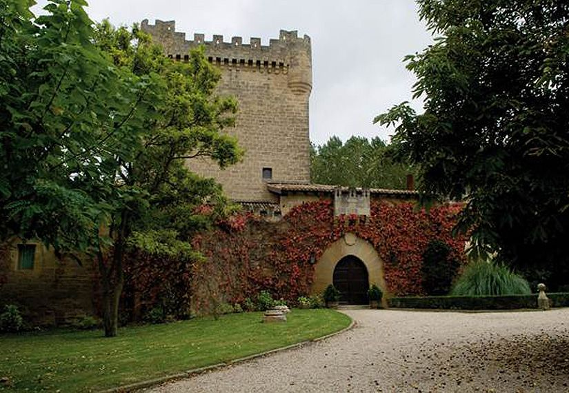
Se elabora la primera cosecha en las viejas instalaciones del propio castillo.
2005
Se inaugura la bodega actual, junto al castillo y al viñedo, dentro del recinto amurallado.
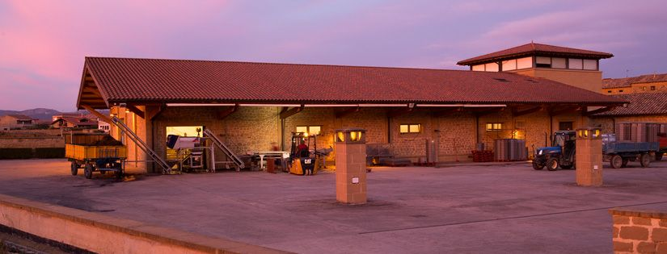
Hoy
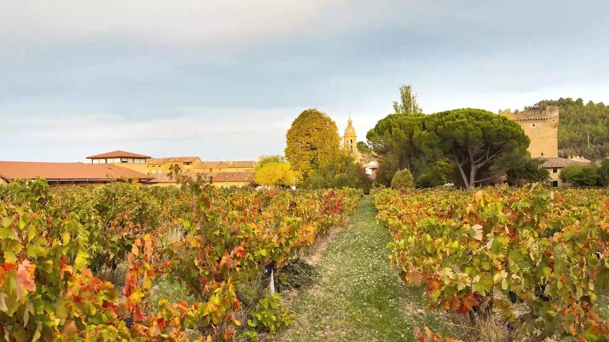
Viñedo propio en ecológico o integrada, y dos parcelas calificadas como Viñedo Singular por la DOCa Rioja.
Un castillo con sus jardines, una bodega moderna y un viñedo, rodeados por la misma muralla.
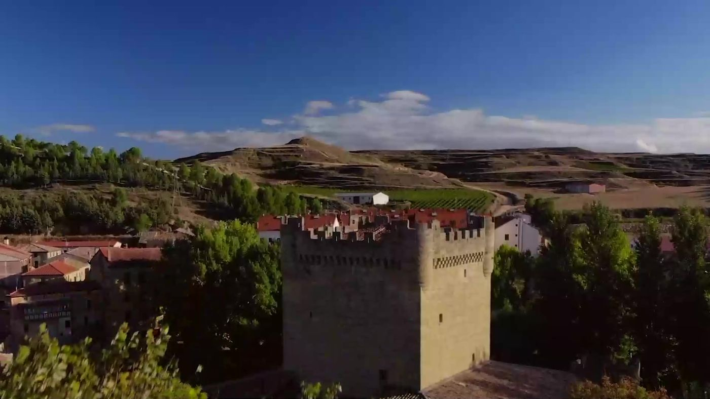
25ha
de viñedo propio, cultivado en vaso y cuidado en ecológico o en viticultura integrada.
100años
tienen las cepas más viejas. Las más jóvenes, 25.
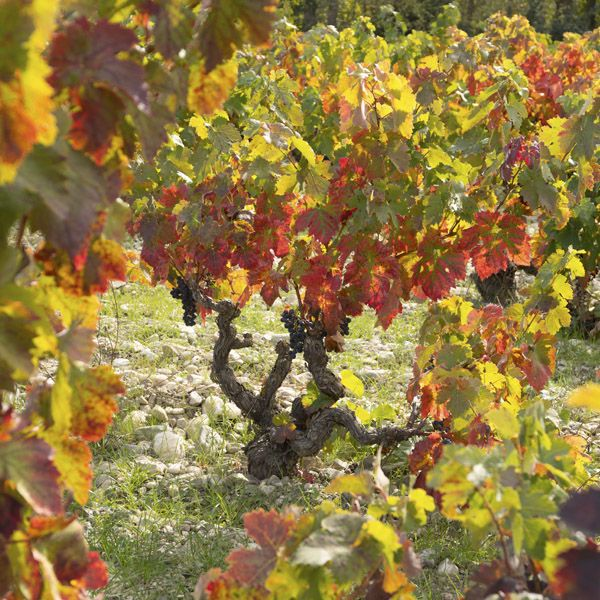
3.800
cepas por hectárea como máximo. Poca producción por planta, más concentración en la uva.
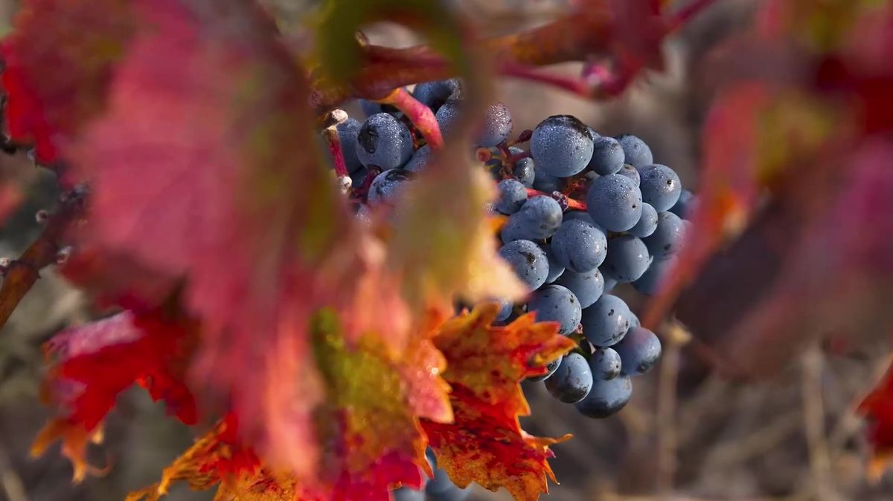
A mano
Toda la vendimia, racimo a racimo.
0bombas
Del racimo a la botella, el vino se mueve solo por gravedad. Así se cuida la uva y se interviene lo mínimo.
Cuatro parajes entre 520 y 650 metros, en la zona más fría y septentrional de La Rioja Alta. Clima continental con influencia atlántica.
520 m
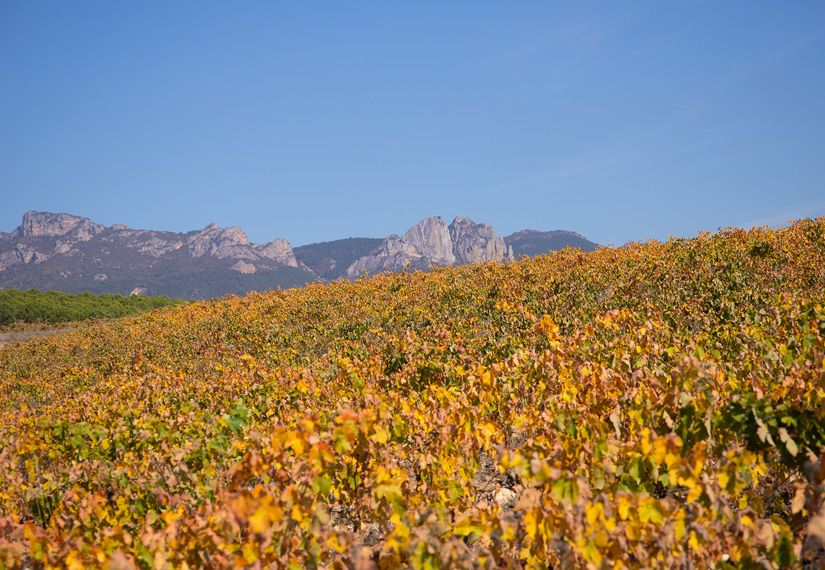
Aluviones con abundante canto rodado sobre un subsuelo arcillo calcáreo, asentado en roca arenisca. Entre 3.500 y 3.800 cepas por hectárea.
Intramuros
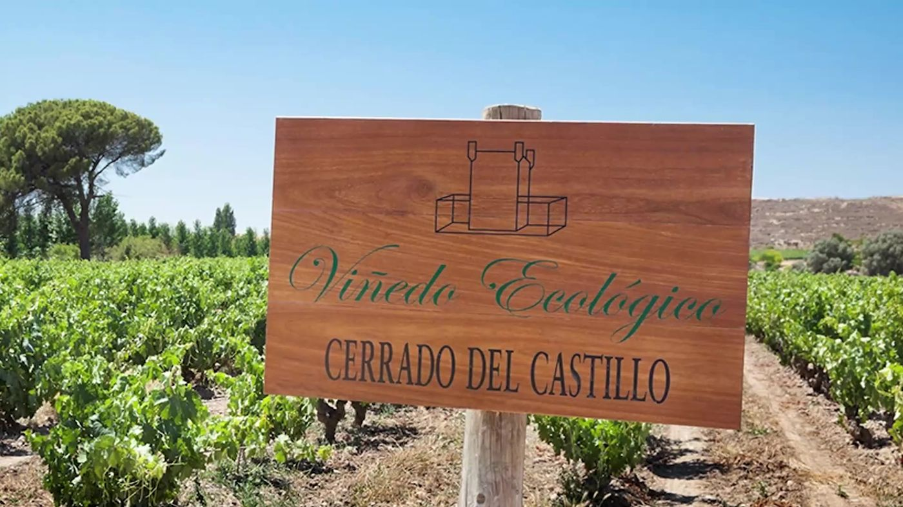
Tempranillo en vaso plantado en 1980 dentro de la muralla y cultivado en ecológico. Terraza del Tirón, profunda, suelta y pobre. Solo en años excepcionales da Cerrado del Castillo.
600 m
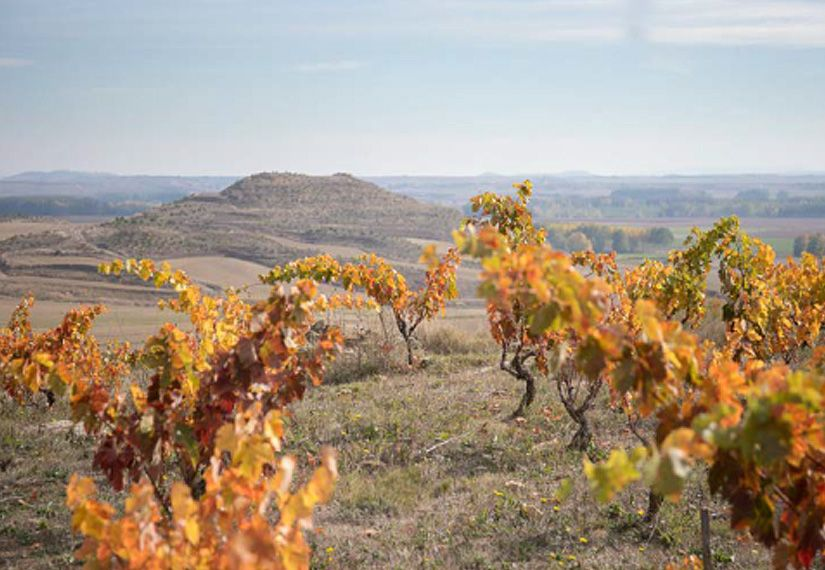
Cepas en vaso de más de 70 años que viven en las grietas de la roca arenisca. Solo algunos años maduran del todo, y entonces nace Tilo.
650 m
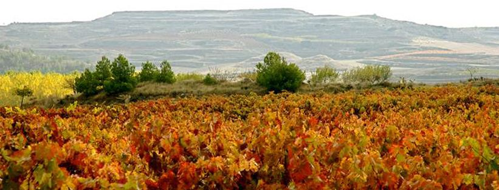
Viejas viñas de viura en el extremo noroeste de Cuzcurrita, lindando con Burgos. De aquí sale Blanca del Castillo, el único blanco de la casa.
En la viña
Cada racimo se corta a mano y se selecciona con cuidado antes de entrar en la bodega.
En la recepción
Desde la mesa de selección, la uva baja al depósito por su propio peso.
En los depósitos
Mosto y vino se mueven por gravedad, sin una sola bomba, desde la recepción hasta la crianza final.
En el calado
Un mínimo de 12 meses en barricas nuevas y seminuevas de roble francés, donde hacen la maloláctica.
Antes de salir
Sin clarificar, el vino se estabiliza durante el invierno en hormigón y descansa al menos 24 meses en botella.
En la viña
Cada racimo se corta a mano y se selecciona antes de entrar en la bodega.
En los depósitos
Mosto y vino se mueven por gravedad, sin bombas, hasta la crianza final.
En el calado
Mínimo 12 meses en roble francés, donde hacen la maloláctica.
Antes de salir
Sin clarificar, un invierno en hormigón y al menos 24 meses en botella.
Solo uva de la zona, de viñas viejas en vaso y producciones bajas. Vinos pensados para aguantar los años sin perder frescura.
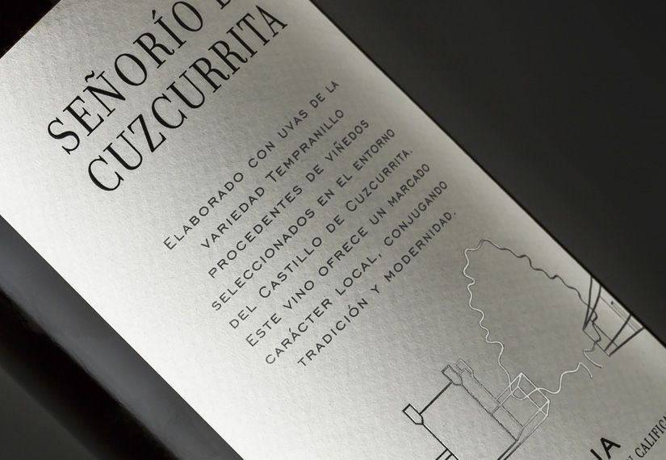
Tinto · Tempranillo
Uvas del castillo y del entorno de Cuzcurrita de Río Tirón. Es el vino que mejor cuenta la personalidad del pueblo.
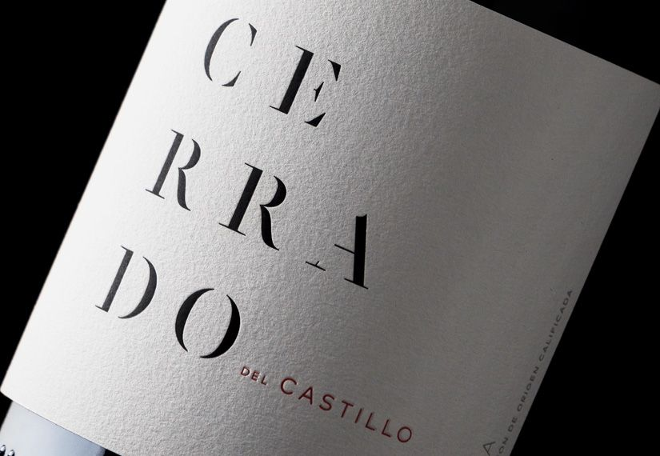
Tinto de finca · Tempranillo
Solo con las viejas viñas de dentro de la muralla, y solo en años excepcionales, cuando la vendimia alcanza la máxima expresión del terruño.
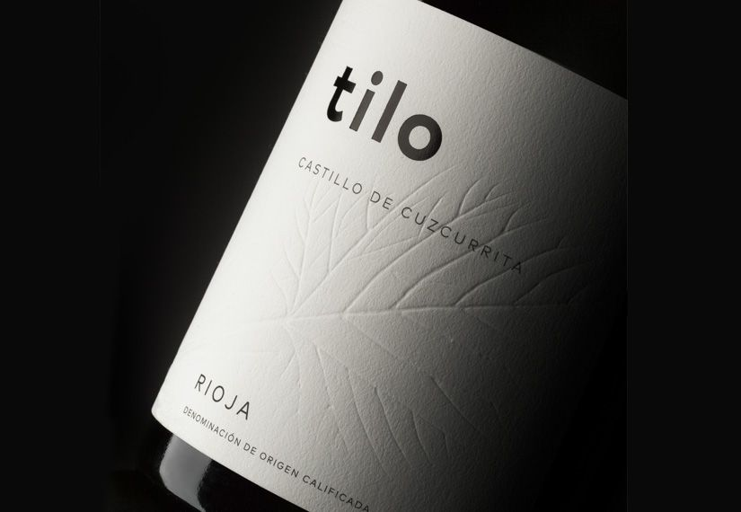
Tinto de parcela · Tempranillo
De la viña de El Monte, muy marcada por el clima de cada año. Pocas veces madura del todo, así que solo se elabora en añadas excepcionales y en cantidades muy pequeñas.
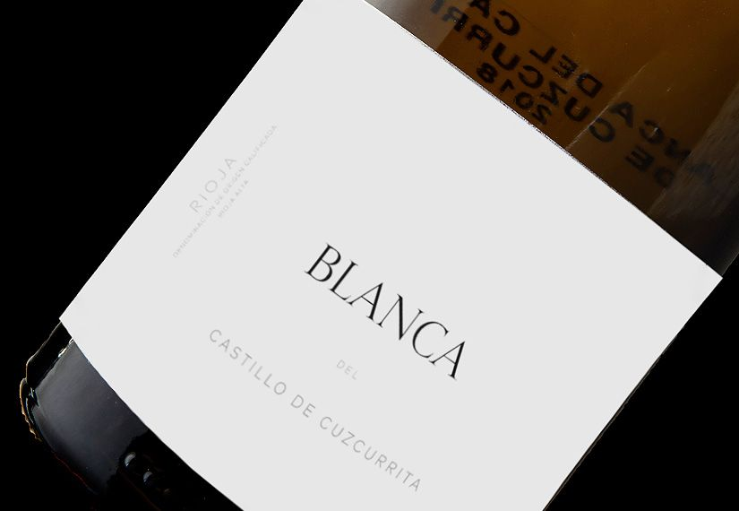
Blanco · Viura
El único blanco de la bodega, de muy pequeña producción. Nace de las viejas viñas de viura de Vallimedio, a 650 metros, en el límite con Burgos.
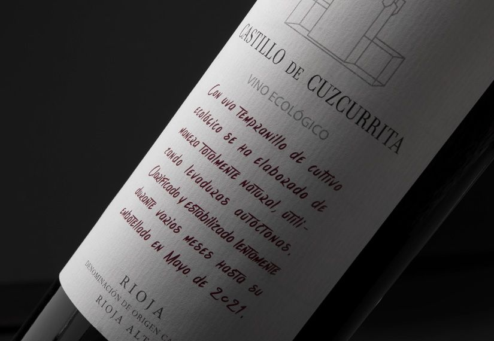
Tinto · Elaboración natural
Sin sulfuroso añadido y con levaduras del propio viñedo. Se clarifica y estabiliza durante seis meses en barrica, con una producción muy limitada.
Tres maneras de conocer el castillo, el viñedo intramuros y el calado. En español, inglés y francés, siempre con cita previa.
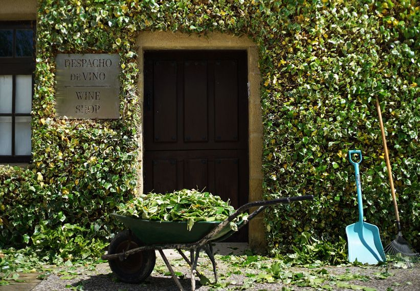
El origen de la finca y del castillo, el viñedo intramuros con cepas de más de 50 años, la bodega y el calado subterráneo. Termina con Señorío de Cuzcurrita y Blanca del Castillo y un picoteo.
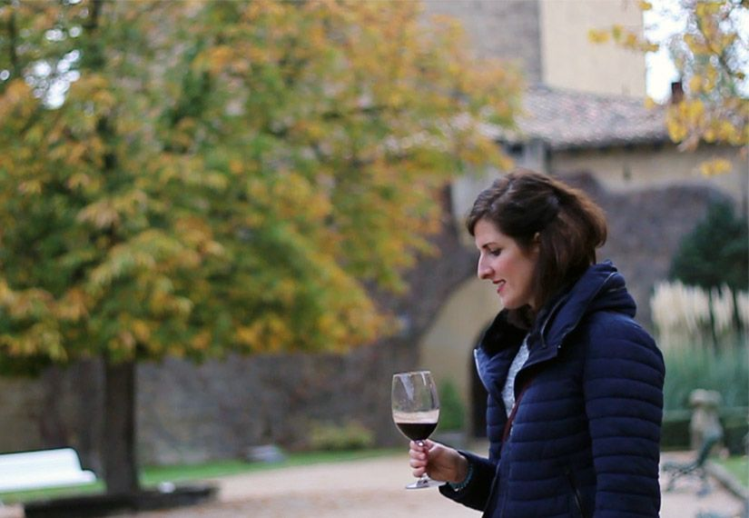
Viñedo y bodega en exclusiva, para entender cómo la uva, el clima, la elaboración y la crianza llegan a la copa. Se catan dos vinos exclusivos, entre ellos Vinos Singulares de edición limitada.
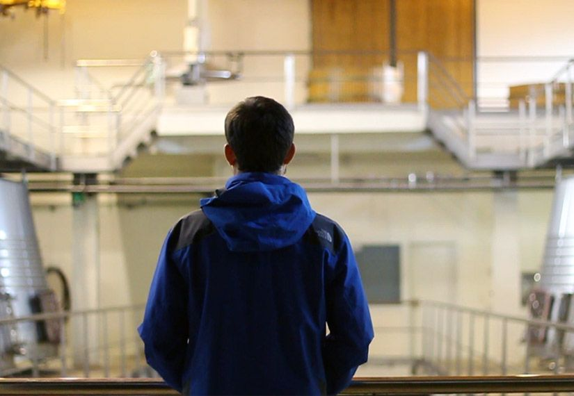
Para el sector. La guían los responsables técnicos y se adapta a cada grupo, con añadas concretas y catas verticales.
Precios con IVA. Clásica: 36 € de lunes a viernes y 40 € en fin de semana para grupos de 2 a 5; 30 € y 35 € de 6 a 12. Premium: 51 € y 55 €.
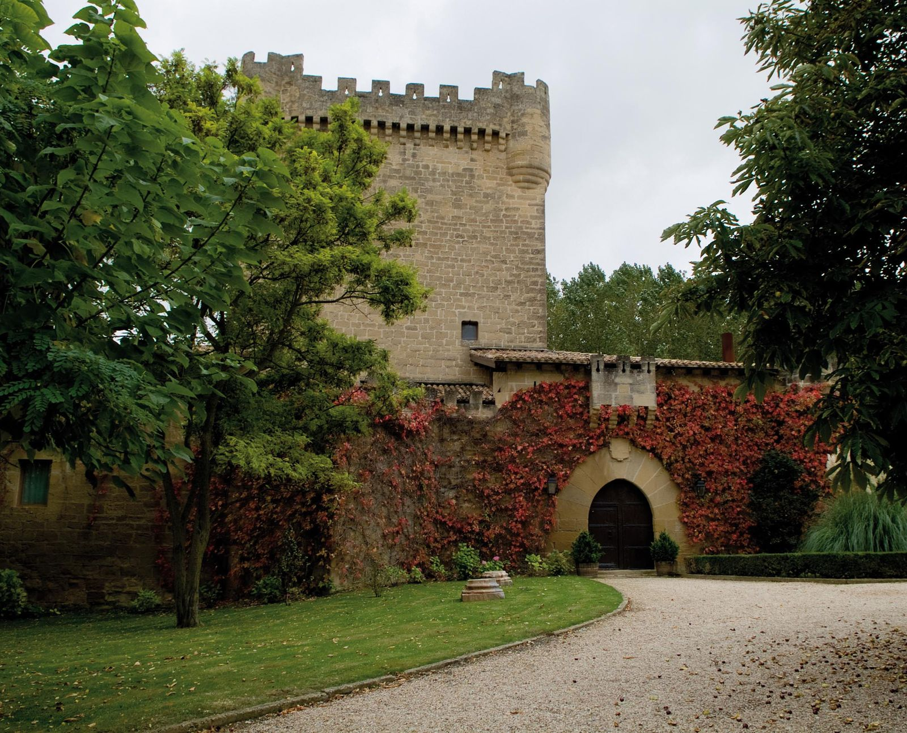
Elige la visita y el día. Te confirmamos la disponibilidad por correo.